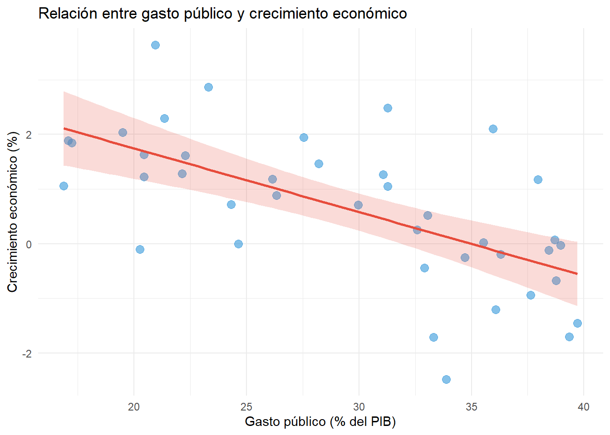

Calcular e interpretar coeficientes de correlación
Comprender la diferencia entre correlación y causalidad
Estimar modelos de regresión lineal simple usando mínimos cuadrados ordinarios
Interpretar coeficientes de regresión e intercepto
Evaluar la bondad de ajuste usando \(R^2\)
Realizar pruebas de hipótesis sobre coeficientes de regresión
11.1 Correlación y regresión
La correlación mide la fuerza y dirección de la relación lineal entre dos variables.
Coeficiente de correlación de Pearson:\[r = \frac{\sum (x_i - \bar{x})(y_i - \bar{y})}{\sqrt{\sum (x_i - \bar{x})^2} \sqrt{\sum (y_i - \bar{y})^2}}\]
\(-1 \leq r \leq 1\)
\(r = 1\): Correlación positiva perfecta
\(r = 0\): Sin correlación lineal
\(r = -1\): Correlación negativa perfecta
Para ilustrar el uso de la correlación, consideremos la relación entre desarrollo económico y democracia, un tema clásico en ciencia política. Analizamos datos de PIB per cápita y nivel de democracia en una muestra de países:
# Datos simulados: PIB per cápita y nivel de democraciaset.seed(2024)n <-50pib <-rnorm(n, mean =15000, sd =8000)democracia <-3+0.0003* pib +rnorm(n, mean =0, sd =1.5)# Correlación de Pearsoncor_pearson <-cor(pib, democracia)cat("Correlación de Pearson:", round(cor_pearson, 3), "\n")
Correlación de Pearson: 0.865
# Test de significanciacor.test(pib, democracia)
Pearson's product-moment correlation
data: pib and democracia
t = 11.931, df = 48, p-value = 5.76e-16
alternative hypothesis: true correlation is not equal to 0
95 percent confidence interval:
0.7723183 0.9213409
sample estimates:
cor
0.8647649
Es fundamental recordar que una correlación fuerte NO implica que una variable cause la otra. Pueden existir variables confusoras, causalidad inversa, o relaciones espurias.1
1 Correlación no implica causalidad. Por ejemplo, ventas de helado y ahogamientos correlacionan, pero ambas son causadas por una tercera variable (temperatura). Establecer causalidad requiere teoría, diseños apropiados y control de confusores.
11.1.1 El modelo de regresión
La regresión lineal modela la relación entre una variable dependiente \(Y\) y una variable independiente \(X\):
\[Y_i = \beta_0 + \beta_1 X_i + \epsilon_i\]
donde: - \(\beta_0\) = intercepto (valor de \(Y\) cuando \(X = 0\)) - \(\beta_1\) = pendiente (cambio en \(Y\) por unidad de cambio en \(X\)) - \(\epsilon_i\) = error (variación no explicada por el modelo)
11.1.2 Mínimos cuadrados ordinarios
El método de mínimos cuadrados ordinarios (OLS, Ordinary Least Squares) estima \(\beta_0\) y \(\beta_1\) minimizando la suma de errores al cuadrado:
Ilustremos la estimación OLS con un ejemplo de economía política: la relación entre gasto público y crecimiento económico.
# Datos simulados: Gasto público y crecimiento económicoset.seed(456)gasto_publico <-runif(40, min =15, max =40) # % del PIBcrecimiento <-5-0.15* gasto_publico +rnorm(40, mean =0, sd =1.2)# Modelo de regresión lineal simplemodelo <-lm(crecimiento ~ gasto_publico)summary(modelo)
Call:
lm(formula = crecimiento ~ gasto_publico)
Residuals:
Min 1Q Median 3Q Max
-2.60682 -0.55133 -0.02959 0.53668 2.21695
Coefficients:
Estimate Std. Error t value Pr(>|t|)
(Intercept) 4.07893 0.69853 5.839 9.46e-07 ***
gasto_publico -0.11667 0.02305 -5.061 1.10e-05 ***
---
Signif. codes: 0 '***' 0.001 '**' 0.01 '*' 0.05 '.' 0.1 ' ' 1
Residual standard error: 1.063 on 38 degrees of freedom
Multiple R-squared: 0.4027, Adjusted R-squared: 0.3869
F-statistic: 25.62 on 1 and 38 DF, p-value: 1.097e-05

Regresión lineal: Gasto público y crecimiento
11.2 Interpretación y ajuste
Intercepto (\(\hat{\beta}_0\)): Valor predicho de \(Y\) cuando \(X = 0\)
Pendiente (\(\hat{\beta}_1\)): Cambio promedio en \(Y\) asociado con un incremento de una unidad en \(X\)
En el modelo anterior, si obtuviéramos \(\hat{\beta}_1 = -0.15\), interpretaríamos: “Por cada punto porcentual adicional de gasto público, el crecimiento económico disminuye en promedio 0.15 puntos porcentuales.”2
2 El coeficiente indica asociación, no necesariamente causalidad. La unidad de medida importa: siempre especifica las unidades y evita lenguaje causal a menos que el diseño lo justifique.
11.2.1 Bondad de ajuste
11.2.2 R cuadrado (\(R^2\))
El coeficiente de determinación mide qué proporción de la variabilidad en \(Y\) es explicada por \(X\):
Por ejemplo, si \(R^2 = 0.42\), interpretamos: “El 42% de la variabilidad en el crecimiento económico es explicada por el gasto público. El 58% restante se debe a otros factores.”
Es crucial entender que un \(R^2\) alto NO implica relación causal. Puede haber variables omitidas importantes, relaciones espurias, o causalidad inversa.3
3 Un modelo puede tener \(R^2\) alto y ser inválido para inferencia causal si omite confusores. En ciencias sociales, valores bajos de \(R^2\) (0.10-0.30) son frecuentes y no indican un modelo “malo”.
Resumen
Concepto
Descripción
Función en R
Correlación
Fuerza y dirección de relación lineal (-1 a 1)
cor(x, y)
Regresión
Modela \(Y = \beta_0 + \beta_1 X + \epsilon\)
lm(y ~ x)
Intercepto (\(\beta_0\))
Valor de \(Y\) cuando \(X = 0\)
coef(modelo)[1]
Pendiente (\(\beta_1\))
Cambio en \(Y\) por unidad de \(X\)
coef(modelo)[2]
\(R^2\)
Proporción de variabilidad explicada
summary(modelo)$r.squared
Correlación ≠ Causalidad
Un \(R^2\) alto NO implica relación causal. Siempre pueden existir confusores omitidos.
Lecturas recomendadas
Fundamentos de regresión lineal:
Agresti, A., & Finlay, B. (2009). Statistical Methods for the Social Sciences (4th ed.). Pearson.
→ Capítulo 9 ofrece introducción clara y accesible a regresión lineal y correlación con ejemplos de ciencias sociales.
Predicción y modelos lineales:
Llaudet, E., & Imai, K. (2022). Data Analysis for Social Science: A Friendly and Practical Introduction. Princeton University Press.
→ Capítulo 4 sobre predicción conecta regresión con aplicaciones prácticas en análisis de datos sociales.
Tratamiento más técnico:
Wooldridge, J. M. (2020). Introductory Econometrics: A Modern Approach (7th ed.). Cengage Learning.
→ Capítulos 2-3 cubren regresión simple con mayor rigor técnico y énfasis en interpretación causal.
Interpreta: ¿la relación es fuerte, moderada o débil?
¿Qué limitaciones tiene la correlación para establecer causalidad?
2. Regresión simple
Relación entre gasto en campaña y votos obtenidos:
set.seed(222)gasto <-runif(30, 100, 1000) # miles de dólaresvotos <-10+0.05* gasto +rnorm(30, 0, 5) # porcentaje
Estima el modelo de regresión
Interpreta el intercepto y la pendiente
¿El coeficiente de gasto es estadísticamente significativo?
¿Qué porcentaje de votos predice el modelo para un candidato que gasta $500,000?
Calcula e interpreta \(R^2\)
3. Interpretación de coeficientes
Un modelo estima: \(\text{Participación} = 35 + 0.4 \times \text{Educación}\), donde Participación es el porcentaje de votantes y Educación es años promedio de educación.
Interpreta el intercepto
Interpreta la pendiente
¿Tiene sentido el intercepto en este contexto? ¿Por qué?
Predice participación para una comuna con 12 años de educación promedio
¿Qué sucede si la comuna tiene 8 años de educación promedio?
4. Diagnóstico de modelo
Con el modelo del ejercicio 2:
Calcula y grafica los residuos
¿Los residuos parecen distribuirse normalmente? (histograma o Q-Q plot)
Grafica residuos vs. valores ajustados. ¿Hay patrones preocupantes?
Identifica observaciones influyentes (si las hay)
5. Comparación de modelos
Estima dos modelos para explicar confianza en instituciones: